← Back to Portfolio
Descriptive and Inferential Statistics
Here are the GitHub links to my project! : @Hugo69md/Inferential-Statistics // @Hugo69md/Descriptive-Statistics
CONTEXT
A family member of mine who runs their own company needed a way to monitor their business metrics more efficiently. They had very specific requirements for a custom dashboard layout that standard software couldn't provide.
While their business has specific internal rules for how data should be handled and interpreted, the off-the-shelf software they were using was too rigid; it couldn't be programmed to follow their unique logic, forcing them to perform many checks and "tests" manually.
They were looking for a solution that could:
- Generate automated reports that are easy to read, allowing them to share insights with their team without spending hours writing summaries.
- Create custom graphs with specific design features and layouts that simply weren't available in standard business tools.
- Implement quick filtering to navigate large amounts of data with ease.
- Centralize and automate their workflow to save time and reduce the daily administrative burden.
THE PROJECT
The custom graph maker I developed provides all the specific layout features they need, offering total freedom over how their business data is visualized.
To make it accessible, I ensured that data can be filtered with just a single line of code. Furthermore, for a non-coder, I've made it possible to integrate the ChatGPT API, allowing them to filter and query their data using natural language.
For the data monitoring side, the program automatically runs all the necessary checks according to the company's specific quality policy. The script produces clear, custom visuals and straightforward reports that answer the vital questions: Is the business hitting its targets? If so, by how much? If not, why?
IMAGES
Here are some outputs plots made with the descriptive statistics script. The different color coding for histogram or box plots allows easier visualization of data, the numbers on top of each columns is a feature that is not available on the software my client was working with for scatterplots or lineplots, you can choose to add a regression line to the plot. In the same way, it is possible to apply a hue or not to the distribution plot. Those seemingly small features when added up, allow to be way more efficient for repetitive work.

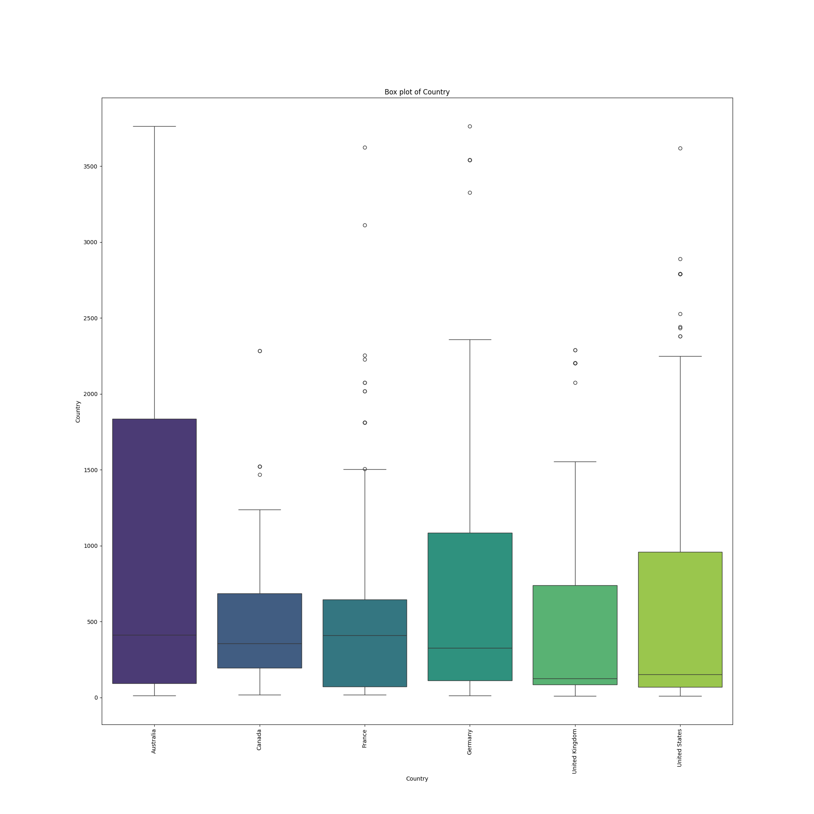
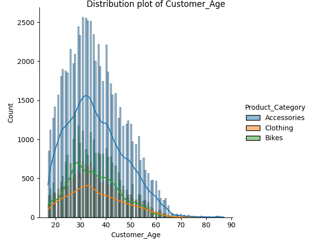
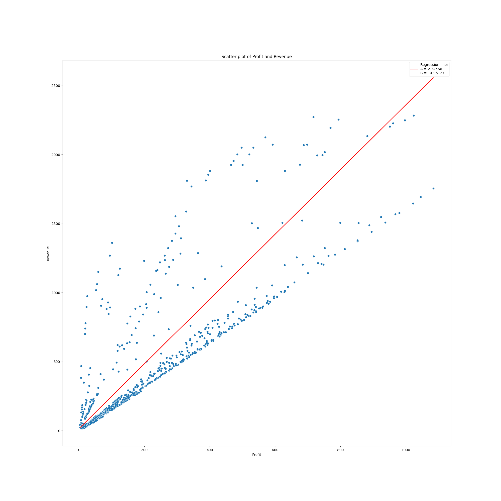
1 Sample t-test
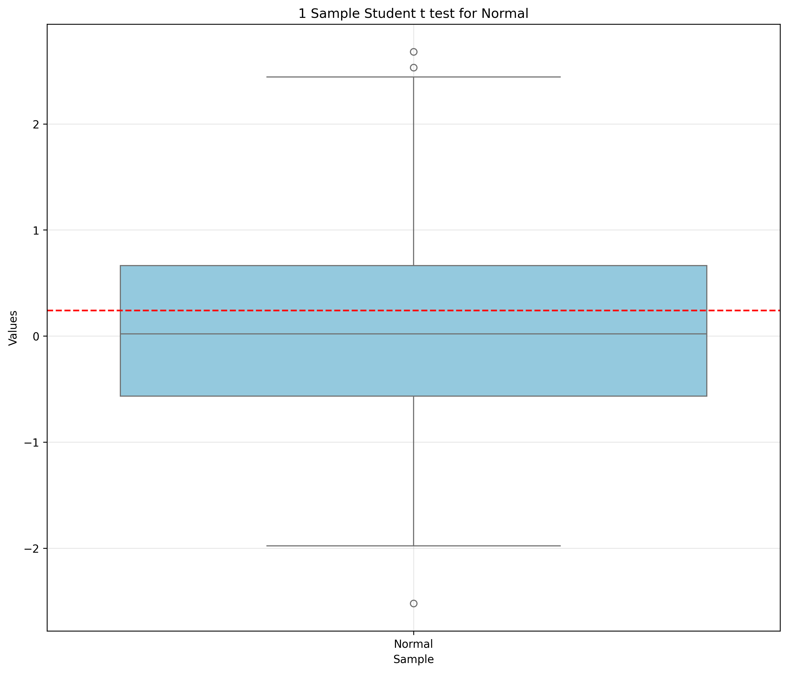
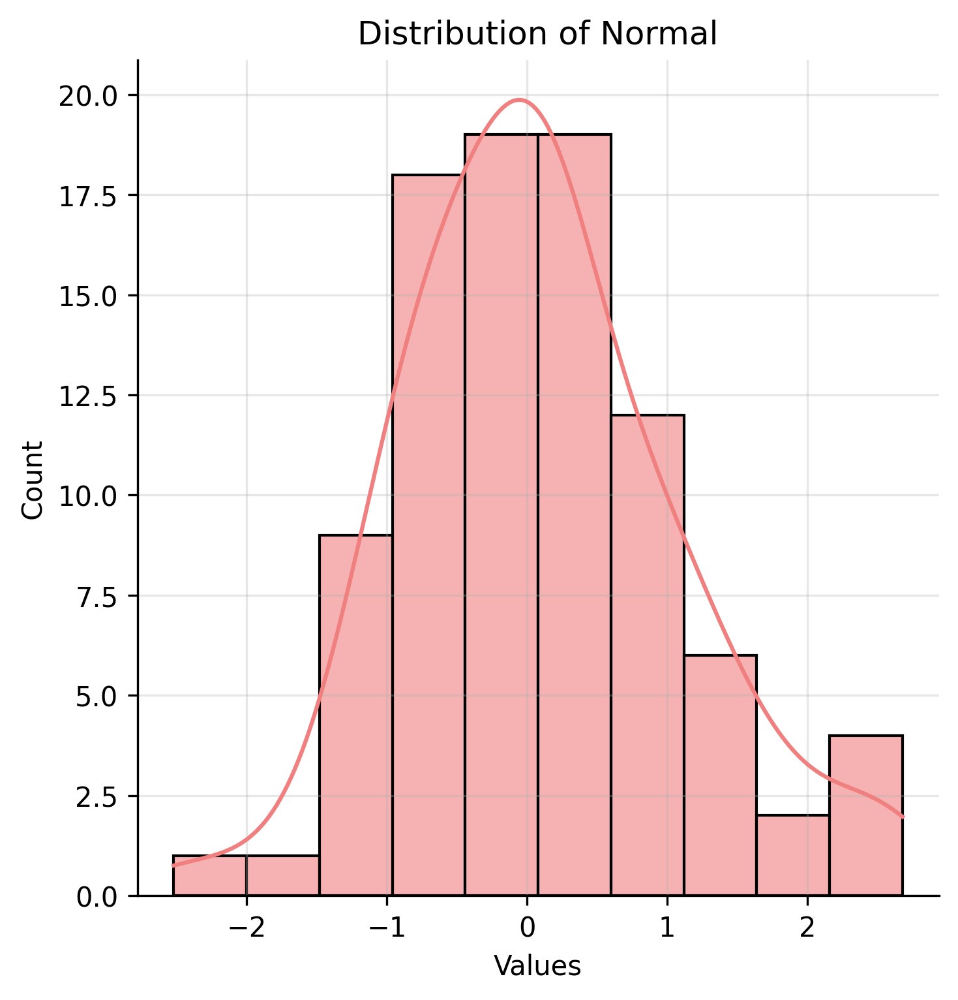
/==================Normality Test Results==================/
Sample Size: 91
Alpha: 0.05
Method Used: Shapiro-Wilk (Sample size <= 5000)
/==================Sample analysis==================/
Test Statistic sample : 0.9784386609382795
P-Value: 0.13574379655638724
Hypothesis testing for normality test results: H0 accepted, normality test validated
/==================1 sample t-Test Results==================/
Sample Size: 91
Alpha: 0.05
Method Used: 'Student's 1 sample T test
Test Statistic: -1.4006174221594012
P-Value: 0.16476686687917072
Expected Mean: 0.24
Hypothesis testing: H0 accepted, the expected mean correlates to the sample's mean
/============================ Warnings ============================/
//
Here is the output of the 1 sample t-test made with the inferential statistics script. Inferential statistics tests work with assumptions, we have to verify if they are fulfilled in order for the test to be reliable, they tend to vary in between different tests, here it's a normality test that needs to be passed. The program selects automatically the best fitted test of normality for the sample among 3 different ones, here Shapiro-wilk is the best fit and will give the better estimation of normality. The expected mean is 0.18, the sample is normal and the P value is 0.08. H0 is accepted.
Equality of Means


/================== Normality Test Results ==================/
Sample Size: 5100
Alpha: 0.06
Method Used: D'Agostino's K-squared (Sample size > 5000 && alpha >= 0,05)
/================== First sample analysis ==================/
Test Statistic first sample : 1.404463028267466
P-Value: 0.4954784021600447
Hypothesis testing for normality test results: H0 accepted, normality test validated
/================== Second sample analysis ==================/
Test Statistic first sample : 3968.7644141368087
P-Value: 0.0
Hypothesis testing for normality test results: H1 accepted, normality test not validated
/================== Equality of Variances Test Results ==================/
Sample Size: 5100
Alpha: 0.06
Method Used: Levene's test
Test Statistic: 3873.156463095762
P-Value: 0.0
Hypothesis testing for equality of variances: H1 accepted, the variances are not equal
/============================ Variance infos ============================/
Sample 1 Variance: 0.972119
Sample 2 Variance: 0.083012
Variance Ratio (larger/smaller): 11.7106
/================== Independant Equality of Means Test Results ==================/
Sample Size: 5100
Alpha: 0.06
Method Used: Welch's T test
Test Statistic: -35.02111619074387
P-Value: 1.5885604446504975e-244
Hypothesis testing for equality of means: H1 accepted, the means are not equal
/============================ Means infos ============================/
Sample 1 Mean: -0.002602
Sample 2 Mean: 0.501129
/============================ Warnings ============================/
!!!!!! the distribution of at least one sample is NOT normal, use a non parametric test
Here is the output of the independent 2 samples t-test or equality of means test made with the inferential statistics script. For this test, each assumptions builds the correct test automatically depending on the results of each precedent test. Here levene's test is used for equality of variances because one of the sample is not normal, the test is more robust than Bartlett's, the other alternative. The test for equality of means is Welch's t test instead of the independent 2 sample t-test because Welch's test is more robust for inequality in variances. A warning appeared stating that one of the sample is not normal, and that the results might not represent reality as the equality of means test is a parametric test.
Mann Whitney U
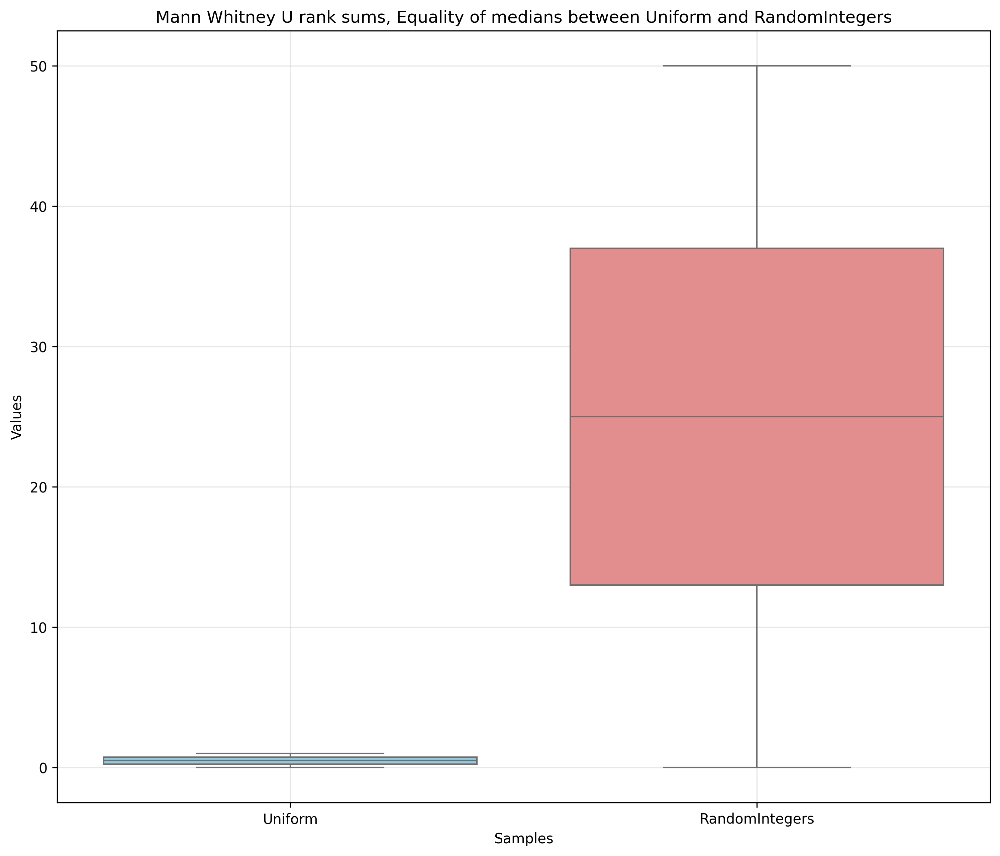
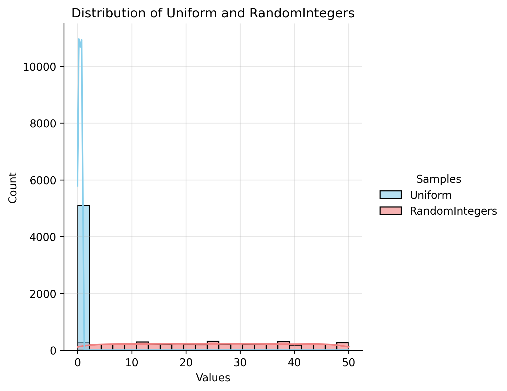
/================== Normality Test Results ==================/
Sample Size: 5100
Alpha: 0.05
Method Used: Anderson-Darling (samplesize >= 5000 && alpha <= 0,05)
/================== First sample analysis ==================/
Test Statistic first sample : 58.18057606818911
Critical Value accepted: 0.786
Hypothesis testing for normality test results: H1 accepted, normality test not validated
/================== Second sample analysis ==================/
Test Statistic first sample : 53.298295330665496
Critical Value accepted: 0.786
Hypothesis testing for normality test results: H1 accepted, normality test not validated
/================== Distribution Shape Check for Mann-Whitney U ==================/
Sample Names: Uniform vs RandomIntegers
Sample Sizes: 5100
Alpha Level (informal): 0.05
Comparison Tolerance: 0.350 (Depends on sample size)
/============================ Skewness ============================/
Skewness Sample 1 (Uniform): 0.005355
Skewness Sample 2 (RandomIntegers): 0.003768
Absolute Difference: 0.001587
Skewness similarity Decision: H0 accepted: Distributions have similar skewness.
/============================ Kurtosis ============================/
Kurtosis Sample 1 (Uniform): -1.206797
Kurtosis Sample 2 (RandomIntegers): -1.175968
Absolute Difference: 0.030829
Kurtosis similarity Decision: H0 accepted: Distributions have similar kurtosis.
/============================ Decision ============================/
Shape Similarity Decision: H0 accepted: Distributions have similar shape (skewness and kurtosis).
/============================ Warning ============================/
//
/============ Independant equality of Medians Test Results Mann Whitney U rank sums ============/
Sample Size: 5100
Alpha: 0.05
Method Used: 'Mann Whitney's 2 sample Independant test
Test Statistic: -84.40746608766351
P-Value: 0.0
Hypothesis testing for equality of medians: H1 accepted, the medians are not equal
/============================ Medians infos ============================/
Sample 1 Median: 0.498892
Sample 2 Median: 25.000000
/============================ Warnings ============================/
//
//
Here is the output of the independent 2 samples non parametric test or Mann Whitney-U test, made with the inferential statistics script. Both are uniform distribution, and have similar shapes but their medians are completely different.
There are more tests available in this project, go test it yourself! Check the links at the top of the page
RESULTS
The implementation of these two Python scripts has significantly reduced errors by automating assumptions and limiting redundant manual data entry. This has provided a steady, high-quality stream of data for their entire team to rely on.
The program is highly intuitive and easy to integrate into a daily business routine. While some basic coding can be used for filtering, the ability to incorporate AI means that data filtering can be done via a simple text prompt. This makes the tool accessible to everyone in the company, regardless of their programming knowledge.
By using this tool, my family member has been able to increase their productivity, reduce oversight errors, and bring much-needed stability to their business analysis. It has been a major "quality of life" improvement for their workday.
Skills and Software Used
- Python
- Statistics
- Data visualization

 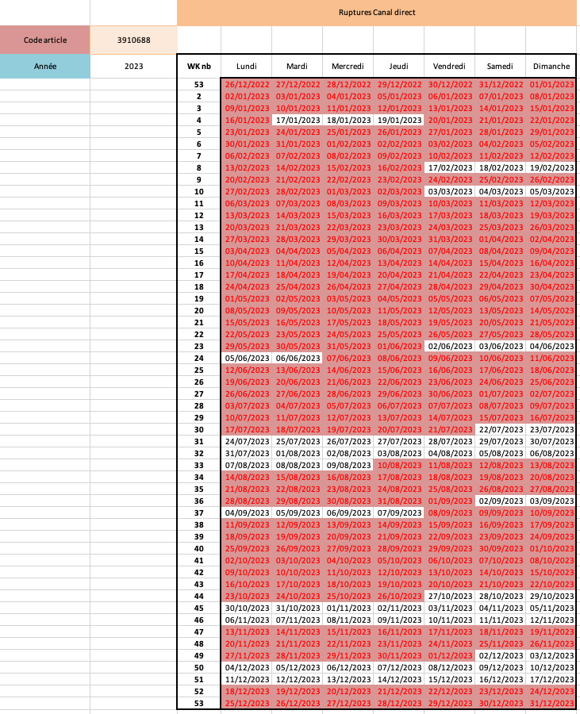
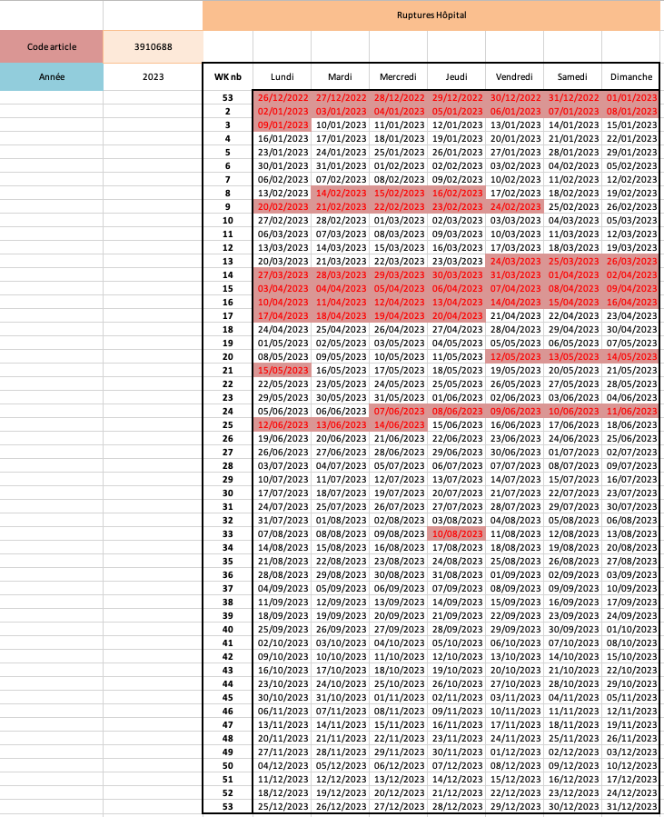
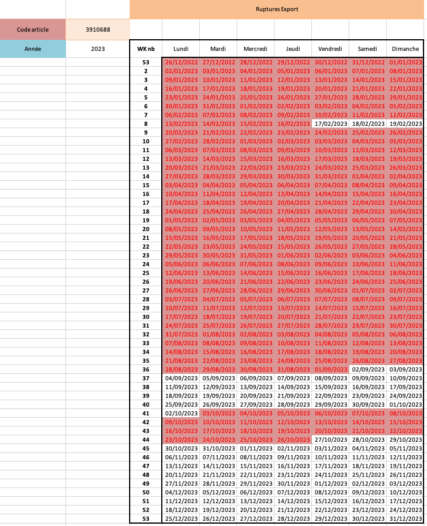
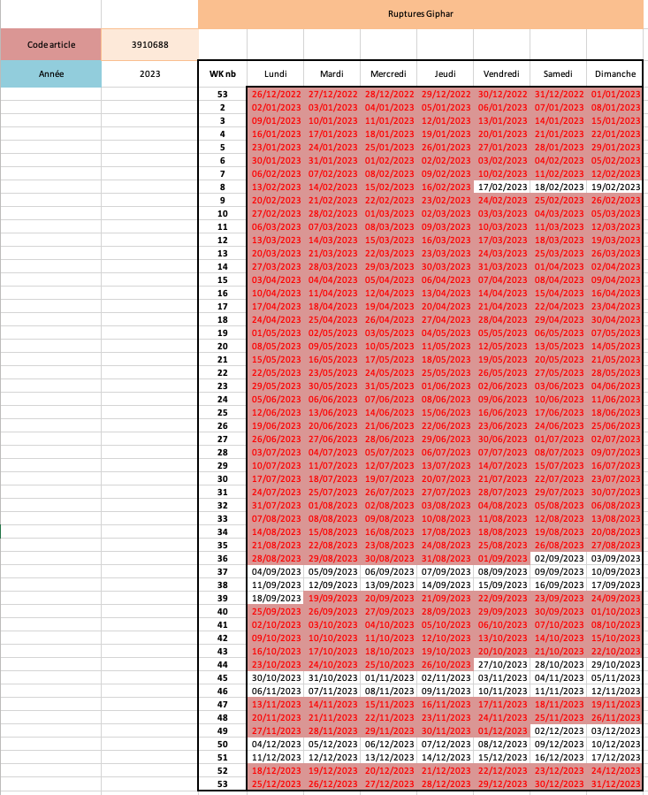
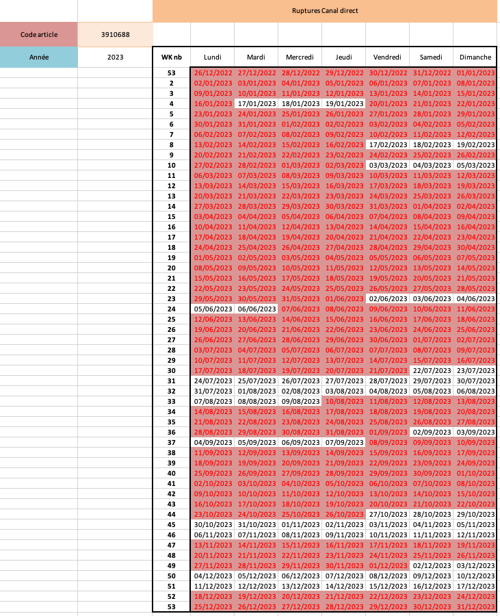
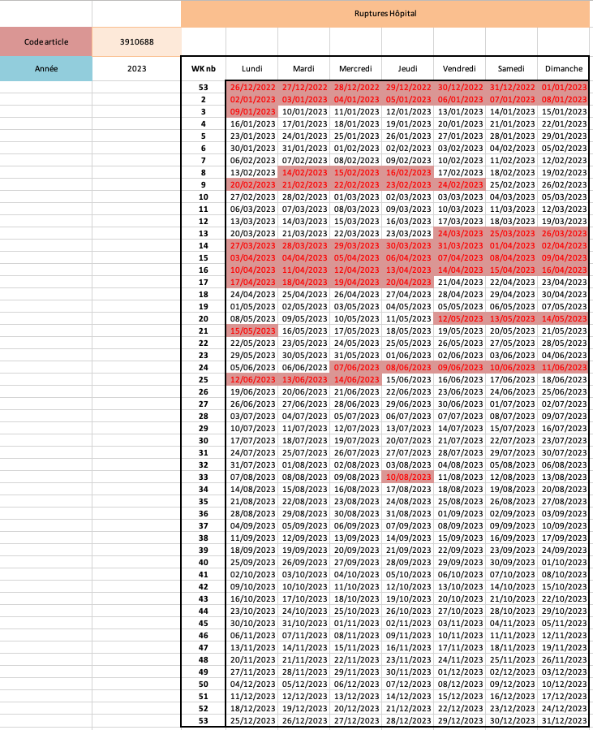
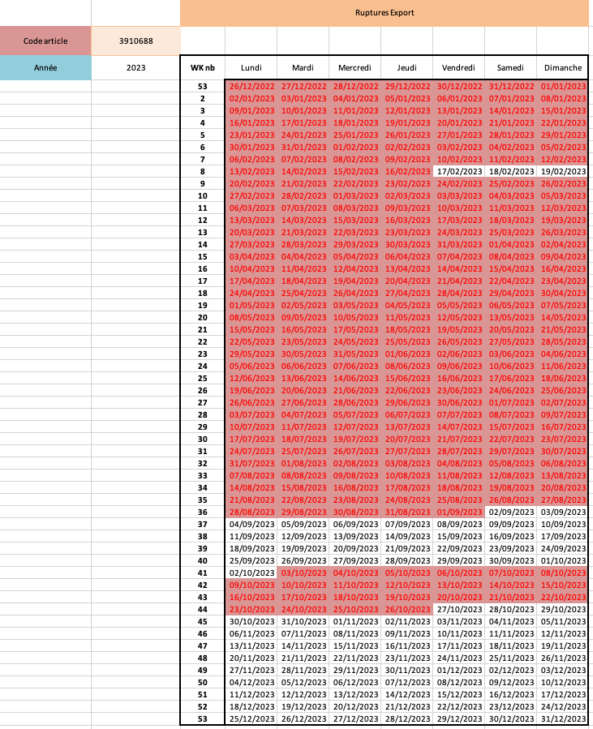
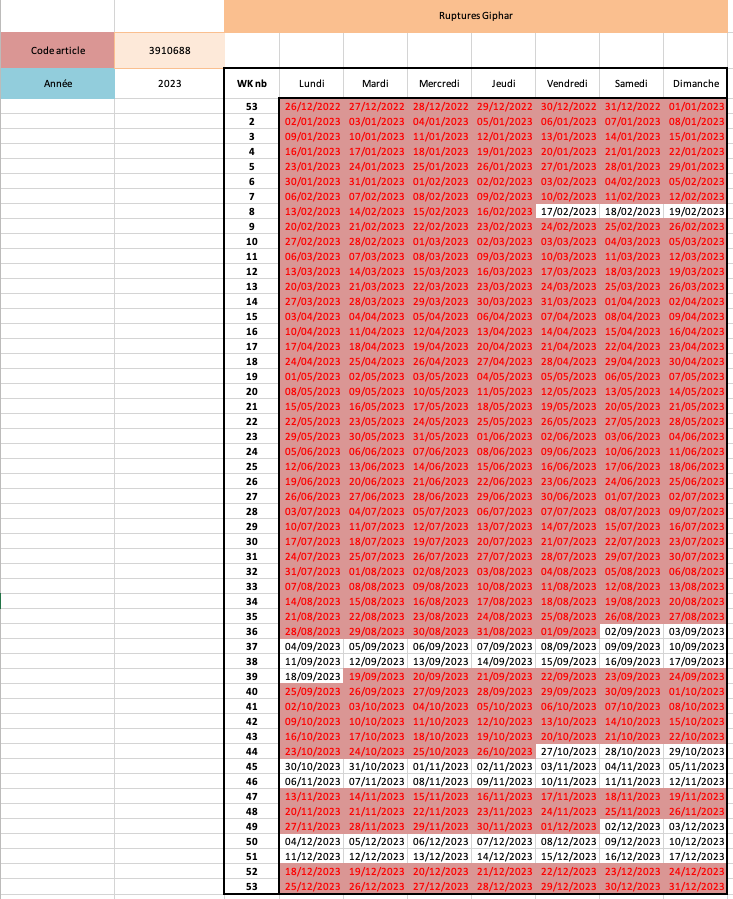